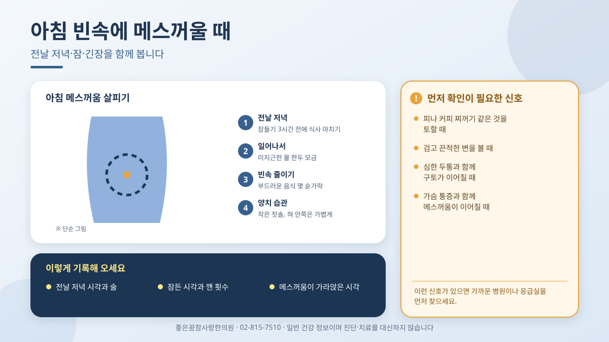

이종호 한의사 감수좋은꿈참사랑한의원 대표원장 (한의사 면허번호 19769)발행 2026-11-26 · 수정 2026-11-26
이 글의 차례
알람을 끄고 일어나 세면대 앞에 섭니다. 칫솔을 입에 넣는 순간 속에서 무언가 울컥 올라오며 헛구역질이 납니다. 물을 한 모금 마셔도 속이 울렁거리고, 아침밥은 생각만 해도 거북합니다. 출근 준비를 하는 내내 명치 아래가 메스껍게 출렁입니다. 오늘도 아침은 거르고 집을 나섭니다.
진료실에서 "아침마다 속이 메스꺼워요"라는 말씀을 생각보다 자주 듣습니다. 점심때쯤이면 언제 그랬냐는 듯 괜찮아지니 병원에 가기도 애매하고, 그렇다고 매일 아침 이러니 그냥 넘기기도 찜찜하다고 하십니다. 그 애매한 마음을 잘 압니다.
아침 공복 메스꺼움은 한 가지 이유보다 여러 가지가 겹쳐 생기는 경우가 많습니다. 밤사이 빈 위에 고인 위산, 늦은 저녁과 술, 얕은 잠, 출근을 앞둔 긴장, 목 뒤로 넘어가는 콧물까지 아침이라는 시간에 한꺼번에 모이기 쉽습니다.
이 글에서는 아침 메스꺼움이 왜 생기는지, 비슷한 다른 불편과 어떻게 나눠 보는지, 일상에서 무엇을 해 볼 수 있는지, 그리고 한의원에서 무엇을 여쭙고 살피는지를 차례로 말씀드리겠습니다.
왜 아침 빈속에 메스꺼울까요
밤새 아무것도 먹지 않으면 위는 빈 채로 몇 시간을 보냅니다. 그동안에도 위산은 조금씩 나오고, 빈 위벽이 위산에 그대로 닿으면 쓰리거나 울렁이는 느낌이 생길 수 있습니다. 아침 첫 메스꺼움은 이렇게 빈속과 위산이 만나 생기는 경우가 많습니다.
여기에 아침에 일어나 몸을 갑자기 세우면 위도 함께 움직이며 울렁임이 커질 수 있습니다. 눈을 뜨자마자 벌떡 일어나기보다 잠시 누운 채로 기지개를 켜고 천천히 일어나는 것만으로도 편하다는 분이 계십니다.
- 늦은 저녁이나 야식, 술을 먹고 바로 잔 다음 날
- 잠이 짧거나 자주 깨서 몸이 덜 회복된 아침
- 출근이나 시험처럼 긴장되는 일을 앞둔 아침
- 콧물이 목 뒤로 넘어가 양치할 때 헛구역질이 나는 경우
- 진통제, 철분제, 일부 영양제를 빈속에 드시는 경우
- 위염이나 역류처럼 위와 식도가 예민해진 경우
늦은 저녁은 특히 자주 만나는 이유입니다. 잠들기 직전까지 위가 음식을 처리하느라 바쁘면 누운 자세에서 위산이 식도 쪽으로 올라오기 쉽고, 다음 날 아침 목이 칼칼하고 속이 더부룩한 채로 깨게 됩니다.
한의학에서는 위의 기운이 아래로 내려가지 못하고 거꾸로 올라오는 것을 메스꺼움의 바탕으로 봅니다. 위가 차고 약해서 그런지, 열이 차서 그런지, 긴장으로 기운이 뭉쳐서 그런지를 나눠 보고, 진찰 결과에 따라 살피는 방향을 정합니다.
헛구역질이 양치할 때만 나는 경우
아침 메스꺼움을 호소하시는 분들 가운데 "칫솔이 혀 안쪽에 닿기만 하면 헛구역질이 나요"라고 하시는 분이 꽤 많습니다. 이 경우는 속 자체보다 목 쪽이 예민해진 경우일 수 있습니다.
비염이 있어 밤새 콧물이 목 뒤로 넘어가면, 아침에 목 안쪽에 끈적한 가래가 걸려 있다가 양치할 때 자극을 받아 헛구역질로 이어지기 쉽습니다. 이런 분은 코막힘, 목에 뭔가 걸린 느낌, 아침 헛기침이 함께 있는 경우가 많습니다.
이때는 칫솔을 작은 것으로 바꾸고 혀 안쪽은 마지막에 가볍게 닦으며, 양치 전에 미지근한 물로 목을 먼저 헹궈 보세요. 코와 목 쪽 불편이 함께 있다면 위와 함께 코도 살펴보는 것이 실마리가 됩니다.
비슷해 보여도 따로 봐야 하는 경우
역류성 식도염은 신물이 올라오고 가슴 한가운데가 타는 듯 쓰린 것이 특징입니다. 아침에 입안이 쓰고 목이 칼칼하며, 누우면 더 심해지는 경우가 많습니다. 메스꺼움과 함께 이런 불편이 이어진다면 역류를 함께 생각해 봅니다.
만성 위염이나 소화불량은 아침뿐 아니라 식후에도 명치가 더부룩하고 무거운 경우가 많습니다. 아침에만 메스껍고 식사 뒤에는 오히려 편해진다면 빈속과 위산 쪽을, 식사 뒤에 더 불편하다면 위의 움직임 쪽을 더 살펴봅니다.
임신 초기의 입덧도 아침 메스꺼움으로 시작되는 경우가 많습니다. 임신 가능성이 조금이라도 있다면 먼저 확인하시고, 임신 중이라면 산부인과와 상의하면서 한의원에도 처음에 알려 주세요. 약과 한약을 정할 때 고려할 것이 달라집니다.
어지럼과 함께 오는 메스꺼움은 귀 안쪽의 균형 기관이 흔들려서 생기는 경우도 있습니다. 일어나 고개를 돌릴 때 빙 도는 느낌이 함께 있다면 위보다 어지럼 쪽을 먼저 나눠 봅니다. 술을 마신 다음 날의 메스꺼움은 숙취와 함께 따로 살피는 것이 좋습니다.
마음과 잠도 아침 속을 흔듭니다
출근을 앞둔 월요일 아침에만 유난히 메스껍다는 분, 시험이나 발표가 있는 날 아침에 헛구역질을 하신다는 분이 계십니다. 긴장하면 몸은 위로 가는 혈액을 줄이고 위의 움직임을 늦추기 때문에, 빈속에 긴장이 겹치면 울렁임이 커지기 쉽습니다.
잠도 가까운 관계입니다. 늦게 자고 일찍 일어나는 날이 이어지면 몸이 덜 깬 상태로 아침을 맞게 되고, 위도 함께 덜 깨어 있습니다. 주말에 늦잠을 잔 날은 괜찮은데 평일 아침에만 메스껍다면 잠의 길이와 긴장을 함께 살펴봅니다.
이런 분께는 아침 시간을 조금만 넉넉하게 잡아 보시길 권합니다. 10분 일찍 일어나 물 한 모금을 마시고 천천히 몸을 움직이는 시간을 두면, 몸과 위가 깨어날 틈이 생깁니다. 서두르며 시작하는 아침일수록 속이 더 울렁이는 경우가 많습니다.
빈속에 드시는 약과 영양제도 살펴보세요
아침 메스꺼움을 여쭙다 보면 일어나자마자 영양제를 한 움큼 드신다는 분을 자주 만납니다. 철분제, 아연, 종합비타민, 오메가3 같은 것들은 빈속에 드시면 속이 울렁이는 분이 적지 않습니다. 몸에 좋으라고 드신 것이 아침 속을 흔들고 있을 수 있습니다.
진통제나 소염제도 마찬가지입니다. 허리나 머리가 아파서 아침에 진통제를 드시는 분이라면 빈속에 드시고 있지는 않은지 확인해 보세요. 처방받은 약이라면 드시는 시각을 바꾸기 전에 처방한 선생님이나 약사와 먼저 상의하시는 것이 좋습니다.
그래서 진료실에서는 드시는 약과 영양제를 하나도 빼지 않고 여쭙습니다. 약 봉투나 영양제 통을 사진으로 찍어 오시면 가장 정확합니다. 무엇을 언제 드시는지만 정리해도 아침 메스꺼움의 실마리가 보이는 경우가 있습니다.
계절이 바뀌면 아침 속도 달라집니다
찬 바람이 부는 계절에는 아침에 일어나 찬물을 마시거나 찬 공기를 갑자기 들이마신 뒤 속이 울렁인다는 분이 늘어납니다. 배가 찬 분은 아침 체온이 가장 낮은 시간에 위가 더 움츠러들기 쉽습니다.
이런 분께는 일어나서 첫 물을 미지근하게 드시고, 배와 허리를 따뜻하게 덮은 채로 아침 준비를 하시길 권합니다. 연말처럼 모임과 술자리가 몰리는 시기에는 늦은 저녁이 잦아지니, 모임 다음 날 아침만이라도 부드러운 음식으로 시작해 보세요.
먼저 이렇게 여쭙니다
처음 오시면 저는 대략 이런 순서로 여쭙니다. 미리 생각해 오시면 상담이 한결 수월해집니다.
- 아침 메스꺼움은 언제부터 시작되었고, 일주일에 며칠 정도인가요?
- 일어나서 몇 시쯤 가장 심하고, 언제쯤 가라앉나요?
- 전날 저녁은 몇 시에 무엇을 드셨고, 술은 드셨나요?
- 속쓰림, 신물, 목에 걸린 느낌, 코막힘이 함께 있나요?
- 빈속에 드시는 약이나 영양제가 있나요?
- 임신 가능성이 있거나 생리 주기와 관계가 있나요?
정확히 기억나지 않으셔도 괜찮습니다. "늦게 먹은 다음 날 더 심해요", "주말에는 괜찮아요" 같은 작은 단서가 진찰의 방향을 정하는 데 큰 도움이 됩니다.
일상에서 먼저 해 볼 수 있는 것
아침 메스꺼움은 전날 저녁부터 시작되는 경우가 많습니다. 그래서 아침에 하는 일과 저녁에 하는 일을 함께 살펴보시면 좋습니다. 한꺼번에 바꾸기보다 하나씩 해 보세요.
- 저녁 식사는 잠들기 3시간 전에 마치고, 야식은 줄이기
- 일어나면 미지근한 물을 한두 모금 천천히 마시기
- 빈속이 길어지지 않도록 바나나, 미음, 식빵처럼 부드러운 것을 조금 먹기
- 양치는 작은 칫솔로, 혀 안쪽은 마지막에 가볍게 닦기
- 빈속에 드시던 영양제는 식후로 옮겨도 되는지 약사나 의사에게 물어보기
- 기상 시각을 10분 앞당겨 아침을 서두르지 않기
아침을 거르는 습관이 있는 분이라면, 처음부터 밥 한 공기를 드시려 하기보다 몇 숟가락이라도 위에 무언가를 넣어 주는 것부터 시작하세요. 빈속이 짧아지는 것만으로도 울렁임이 줄었다고 말씀하시는 분이 많습니다.
잠자리에서 상체를 조금 높이는 것도 도움이 됩니다. 베개만 높이면 목이 꺾이니, 등부터 머리까지 완만하게 받쳐 주는 쿠션을 쓰시면 밤사이 위산이 올라오는 것을 줄이는 데 도움이 될 수 있습니다. 왼쪽으로 누워 자는 것이 편하다는 분도 계십니다.
커피는 아침 메스꺼움이 있는 기간에는 빈속에 바로 드시기보다 무언가를 조금 먹은 뒤에 드시는 편이 좋습니다. 진하고 차가운 커피, 탄산음료, 매운 음식, 기름진 아침 메뉴도 속이 예민한 시기에는 잠시 줄여 보세요.
한의원에서 함께 살필 수 있는 경우
- 내과 검사에서 큰 이상이 없다는데 아침 메스꺼움이 이어지는 경우
- 메스꺼움과 함께 명치가 답답하고 입맛이 없는 경우
- 긴장되는 날 아침마다 속이 울렁이고 헛구역질이 나는 경우
- 손발과 배가 차고, 찬 음식을 먹으면 속이 더 불편한 경우
- 잠이 얕고 피곤한 아침일수록 메스꺼움이 심해지는 경우
좋은꿈참사랑한의원에 오시면 먼저 아래 '먼저 확인이 필요한' 신호가 없는지부터 봅니다. 그다음 맥을 짚고 배를 눌러 보며 명치 주변의 단단함과 차가움을 확인하고, 잠과 식사 시간, 긴장의 흐름을 여쭙습니다.
진찰한 내용을 바탕으로 생활에서 바꿔 볼 것 하나와 함께 침, 온열 관리, 한약 상담 가운데 지금 상태에 맞는 것을 정합니다. 한약을 상의할 때는 드시는 약을 모두 확인하고 신중하게 정하며, 임신 중이거나 임신 가능성이 있다면 먼저 알려 주시고 산부인과와 상의해 주세요.
위내시경이나 혈액 검사가 필요하다고 판단되면 내과 진료를 함께 권합니다. 위장약이나 다른 약을 처방받아 드시고 있다면 처방한 선생님과 상의 없이 멈추지 않으시도록 안내하고, 한의원 진료는 그와 나란히 갑니다.
이렇게 기록해 오시면 상담이 쉬워집니다
아침 메스꺼움은 전날 저녁과 밤사이의 일이 실마리가 되는 경우가 많습니다. 1~2주 정도만 간단히 적어 보세요.
- 전날 저녁 식사 시각과 메뉴, 술 여부
- 잠든 시각과 일어난 시각, 밤에 깬 횟수
- 아침 메스꺼움의 정도와 가라앉은 시각
- 헛구역질이 양치할 때 났는지, 그냥 났는지
- 그날 아침 긴장되는 일이 있었는지
- 속쓰림, 신물, 코막힘처럼 함께 있었던 불편
기록을 나란히 놓고 보면 "늦게 먹은 다음 날", "잠을 설친 날", "월요일 아침"처럼 반복되는 장면이 보이기 시작합니다. 그 장면 하나를 바꾸는 것이 다음 걸음의 출발점이 됩니다.
편안한 아침을 위해
아침 메스꺼움은 하루의 첫 순간을 무겁게 만듭니다. 출근길 지하철에서도, 아침 회의에서도 속이 울렁이면 그날 하루가 시작부터 지치게 느껴집니다. 그 불편을 그냥 참고 넘기지 않으셔도 됩니다.
아침 속은 전날 하루의 마무리를 비추는 거울 같기도 합니다. 저녁을 어떻게 먹고 어떻게 잠들었는지가 다음 날 아침의 첫 느낌을 정하는 경우가 많습니다. 그래서 아침을 바꾸고 싶다면 전날 저녁부터 함께 돌아보시길 권합니다.
저녁을 조금 일찍 마치기, 일어나서 물 한 모금, 아침 10분 여유. 이번 주에는 이 가운데 하나만 골라 보세요. 그리고 아침이 어떻게 달라지는지 적어 오시면, 다음에는 그 기록을 펼쳐 놓고 함께 다음 걸음을 정해 보겠습니다.
이런 증상은 먼저 확인이 필요합니다
- 피나 커피 찌꺼기 같은 것을 토하거나 검고 끈적한 변을 보는 경우
- 갑자기 심한 두통이나 가슴 통증과 함께 메스꺼움과 구토가 이어지는 경우
이런 신호가 있으면 한의원보다 가까운 병원이나 응급실을 먼저 찾으세요.
함께 읽으면 좋은 글
- 속쓰림과 신물이 오래 갈 때 어떤 점을 살펴보고, 언제 검사를 받아야 하나요?
- 위내시경에서 만성 위염이라는 말을 들었을 때 무엇을 알아두고 어떻게 살피나요?
- 임신 중 입덧이 심할 때는 하루를 어떻게 지내고, 한의원에는 무엇을 알려야 하나요?
- 술 마신 다음 날 숙취와 속 쓰림은 왜 생기고 어떻게 살피나요?
- 입맛이 없고 밥이 잘 넘어가지 않는 성인 식욕부진은 어떻게 살피나요?

여쭙는 것
- 아침 메스꺼움은 언제부터 시작되었고, 일주일에 며칠 정도인가요?
- 일어나서 몇 시쯤 가장 심하고, 언제쯤 가라앉나요?
- 전날 저녁은 몇 시에 무엇을 드셨고, 술은 드셨나요?
생활에서 해 볼 것
- 저녁 식사는 잠들기 3시간 전에 마치고, 야식은 줄이기
- 일어나면 미지근한 물을 한두 모금 천천히 마시기
- 빈속이 길어지지 않도록 바나나, 미음, 식빵처럼 부드러운 것을 조금 먹기
한의원에서 함께 살필 것
- 내과 검사에서 큰 이상이 없다는데 아침 메스꺼움이 이어지는 경우
- 메스꺼움과 함께 명치가 답답하고 입맛이 없는 경우
- 긴장되는 날 아침마다 속이 울렁이고 헛구역질이 나는 경우
먼저 확인이 필요한 신호
- 피나 커피 찌꺼기 같은 것을 토하거나 검고 끈적한 변을 보는 경우
- 갑자기 심한 두통이나 가슴 통증과 함께 메스꺼움과 구토가 이어지는 경우
한눈에 보는 표
| 구분 | 핵심 |
|---|---|
| 여쭙는 것 | 아침 메스꺼움은 언제부터 시작되었고, 일주일에 며칠 정도인가요? 일어나서 몇 시쯤 가장 심하고, 언제쯤 가라앉나요? |
| 생활에서 해 볼 것 | 저녁 식사는 잠들기 3시간 전에 마치고, 야식은 줄이기 일어나면 미지근한 물을 한두 모금 천천히 마시기 |
| 한의원에서 함께 살필 것 | 내과 검사에서 큰 이상이 없다는데 아침 메스꺼움이 이어지는 경우 메스꺼움과 함께 명치가 답답하고 입맛이 없는 경우 |
| 먼저 확인이 필요한 신호 | 피나 커피 찌꺼기 같은 것을 토하거나 검고 끈적한 변을 보는 경우 갑자기 심한 두통이나 가슴 통증과 함께 메스꺼움과 구토가 이어지는 경우 |
자주 묻는 질문
아침에만 메스껍고 점심때는 괜찮은데 신경 써야 하나요?
낮에 괜찮아지더라도 아침 메스꺼움이 몇 주씩 이어지면 이유를 한 번 나눠 보시는 것이 좋습니다. 전날 저녁과 잠, 빈속 시간을 함께 적어 오시면 실마리를 찾는 데 도움이 됩니다.
아침을 먹으면 오히려 더 메스꺼운데 굶어도 되나요?
빈속이 길어지면 울렁임이 커지는 분이 많습니다. 밥 대신 미음이나 바나나처럼 부드러운 것을 몇 숟가락만 드셔 보시고, 그래도 어렵다면 진찰 때 함께 방법을 찾아봅니다.
양치할 때마다 헛구역질이 나는 건 위가 나빠서인가요?
꼭 위 때문만은 아닙니다. 콧물이 목 뒤로 넘어가거나 목이 예민해져서 생기는 경우도 많아서, 코막힘이나 목에 걸린 느낌이 함께 있는지 나눠 살핍니다.
아침 메스꺼움에 한약을 먹어도 되나요?
진찰 뒤 지금 상태에 맞는지 판단해 정합니다. 드시는 약을 모두 확인하고 신중하게 정하며, 임신 가능성이 있다면 먼저 알려 주시고 산부인과와 상의해 주세요.
위내시경은 언제 받아 보면 좋을까요?
메스꺼움이 오래가거나 속쓰림, 체중 변화, 삼키기 불편함이 함께 있다면 내과에서 상의해 보시길 권합니다. 최근 받은 검사 결과가 있다면 한의원에도 가져와 주세요.
좋은꿈참사랑한의원은 재진 때 지난번 이야기부터 이어서 여쭙니다. 진료시간과 예약은 오시는 길에서 확인하세요.
어디서 상담받을 수 있나요?
좋은꿈참사랑한의원은 서울 동작구 만양로2길 2 신성빌딩 3층·5층(서울 동작구 상도동, 7호선 상도역 3번 출구 근처)에 있습니다. 한의사 3명(이종호 대표원장, 조영기 수석진료원장, 정원영 진료원장)이 진료합니다. 진료시간은 평일 09:30~20:00(점심 13:00~14:00), 토·일·공휴일 09:30~15:00이며, 방문 전 전화로 확인을 권합니다. 예약은 네이버 예약, 카카오톡 상담, 전화 02-815-7510로 받습니다.
이 글은 일반적인 건강 정보이며 개인의 진단이나 치료를 대신하지 않습니다. 증상이 있거나 복용 중인 약이 있다면 진료를 통해 확인하세요. 치료 효과는 개인마다 다를 수 있습니다.
작성 기준: 일반적으로 알려져 있는 건강 정보를 참고해 정리했습니다(대표원장 감수). 증상 기록은 1~2주 동안 하루 1회, 비슷한 시간에 적어 오시면 지난 상태와 비교하기 쉽습니다.